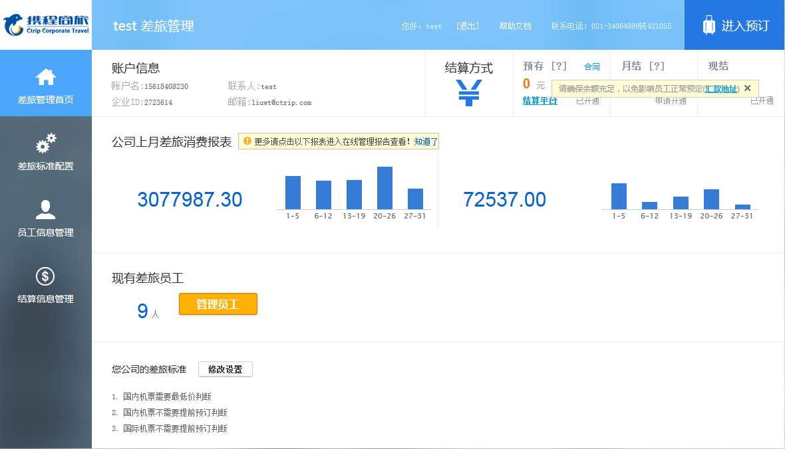

携程商旅企业差旅管理平台
微信企业号差旅管理套件
微信企业号差旅管理套件
机票、酒店、火车、用车商务出行
月结、预存、现付结算灵活
在线差旅管理报告、公对公结算合规透明
差旅管控、独有价格优势节省高达30%差旅费 说走就走
月结、预存、现付结算灵活
在线差旅管理报告、公对公结算合规透明
差旅管控、独有价格优势节省高达30%差旅费 说走就走
差旅部署：
一键安装、全员推广、切实执行。
一键安装、全员推广、切实执行。
微信企业号管理员PC打开qy.ctripbiz.com “立即开通”携程商旅 ，进入差旅管理，设置企业差旅政策、申请月结、预存、授权审批体系，即可极速部署到企业内部。

立即开通后企业号管理员直接跳转至“携程商旅”差旅管理页面

差旅预订：
一站式服务，商务出行说走就走
一站式服务，商务出行说走就走
丰富的产品资源、顺畅的预订系统、与7×24小时全天候专业服务让商务出行前所未有的便捷舒心；
机票、酒店、火车票、用车、签证等商旅出行服务应有尽有，一站式的解决所有差旅出行需求，让忙碌的商务出行者省去在各个预订平台跳转之苦，也让企业差旅负责人免去多方对接沟通之苦，省时省心省力。
机票、酒店、火车票、用车、签证等商旅出行服务应有尽有，一站式的解决所有差旅出行需求，让忙碌的商务出行者省去在各个预订平台跳转之苦，也让企业差旅负责人免去多方对接沟通之苦，省时省心省力。